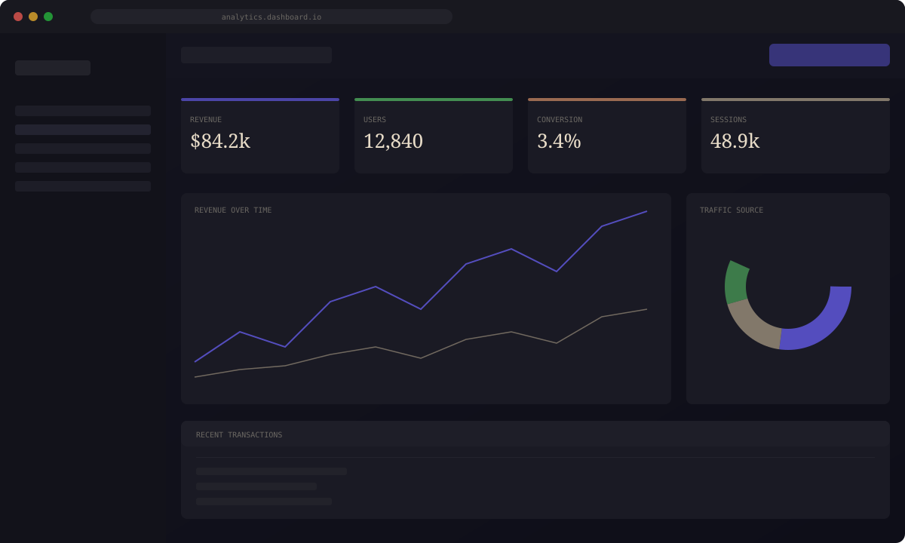
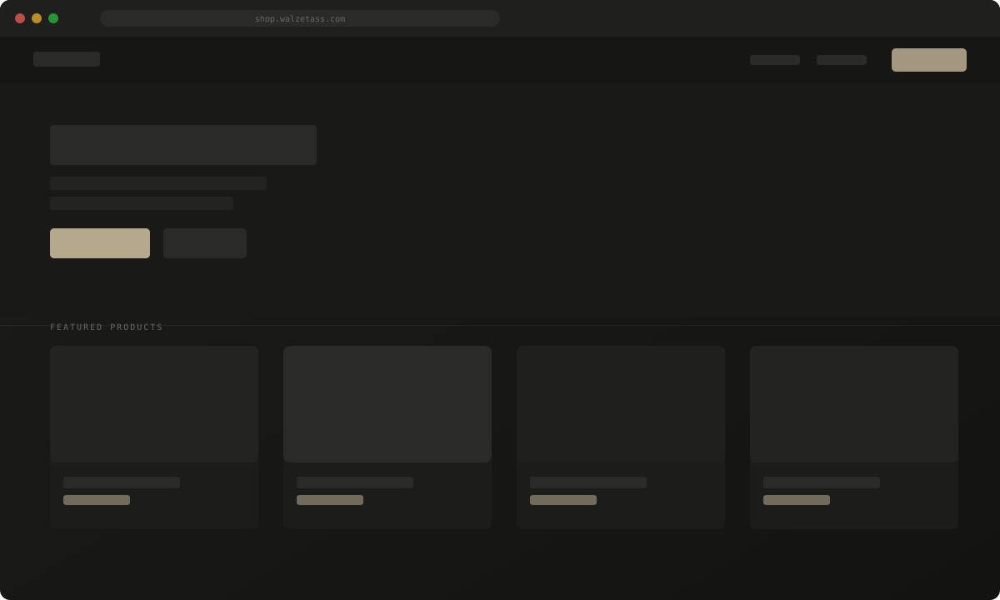

WariPOS — Point of Sale
& Retail Management
Sistem kasir dan manajemen ritel multi-platform dengan arsitektur offline-first, pencetakan struk termal ESC/POS dinamis, rekonsiliasi kas shift, dan sinkronisasi inventori.
Keandalan Operasional Ritel Penuh
Tanpa Ketergantungan Internet
UMKM dan toko ritel kerap mengalami antrean tersendat dan risiko kehilangan transaksi saat koneksi internet terputus. WariPOS dirancang dengan prinsip offline-first menyeluruh: seluruh transaksi kasir, pemotongan stok, pembuatan nota, dan pencatatan shift disimpan langsung di database SQLite lokal perangkat.
Mendukung pemindai barcode USB/kamera, pencetakan struk termal ESC/POS (58mm/80mm) dengan Dynamic Stacking agar teks nota tidak saling bertumpuk, ekspor PDF kontinu, serta pembagian nota digital langsung ke WhatsApp pelanggan.

Tantangan nyata
yang dihadapi
Integritas Transaksi Offline
Menjamin konsistensi pemotongan stok dan audit rekonsiliasi uang fisik kasir (Open/Close Shift) di SQLite lokal tanpa ada selisih data saat sinkronisasi.
Pencetakan Struk Termal Dinamis
Mengatasi keterbatasan lebar kertas POS dengan dynamic vertical stacking agar nama barang panjang dan harga tetap rapi di printer 58mm maupun 80mm.
Keseragaman Desktop & Mobile
Menyatukan basis kode TypeScript dan komponen React untuk platform desktop Windows/Linux (Electron) dan perangkat ponsel kasir (Capacitor Android).
Pendekatan teknis
yang berhasil
Arsitektur Offline-First: Memanfaatkan SQLite lokal dengan Drizzle ORM untuk pemrosesan transaksi berkecepatan tinggi tanpa latensi jaringan.
ESC/POS & Dynamic Stacking: Engine pencetakan nota kustom mendukung Bluetooth dan USB printer, ekspor PDF kontinu, serta pengiriman nota instan via WhatsApp.
Audit Kas & Inventori: Fitur buka/tutup kasir dengan audit surplus/defisit otomatis serta notifikasi Low Stock Alert saat stok menipis.
Dampak nyata
terukur
Tangkapan layar lainnya

Katalog Produk & Fitur Held Cart